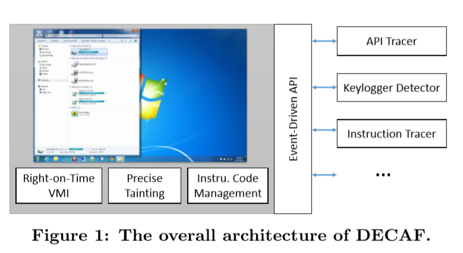

DECAF¶
1. Introduction¶
基于QEMU的，针对动态分析框架，提供实时虚拟机自省功能
结合TCG指令级的污点分析
提供插件-事件驱动程序接口（3类插件：指令tracer、keylogger detector、API tracer）
实现方面，包含**9550行C++/10270行 C**代码
- 通过监测硬件层事件-重构 系统级别 语义信息
- 基于事件的接口，注册（内核空间、进程、内核模块）
三个sample plugins¶
-
API Tracer 通过hook API entries and exits, 追踪API调用
-
Keylogger
-
Instruction tracer: within specific context（user-level process or a kernel module）记录指令执行
支持多种架构
解决了4个问题：¶
- 如何重构OS-level semantic view
VMI / TEMU
- multiple taint labels？
precision taint information / bit level
2. System overview¶

描述架构图：
decaf 一个增强版qemu，（QEMU通过动态二进制翻译技术仿真不同目标架构）
如图所示，可以在虚拟机内部运行一些感兴趣的程序，同时在外部通过分析插件进行分析。为提供不同分析能力，DECAF参与动态二进制翻译过程（如何参与的第三部分介绍）
功能点（组件components）¶
污点传播是异步的 两个原因：1.开销大 2. 没必要实时
-
Event-driven programming interface 事件驱动程序接口？？¶
不同于别的，DECAF是把插件？ 封装好的，不可见的，在translation phase 插桩，在execution phase分析
分析插件只需注册特定事件，implement the corresponding event handling functions???
-
Instrument management 动态插桩管理？？¶
插件注册和解耦
为节省开销，插桩代码仅在必需要的地方插入
举例子：
注册啥？？？？，hook的插桩代码只放一次，放在入口点
解注册，插桩代码会被移除出translation代码
管理插件模块，被DECAF框架管理，对插件不可见
Sample Plugins 样例插件¶
keylogger-键盘记录器
有段代码实现
-
先 init_plugin(), 返回一个指针 plugin_interface_t, 会
-
创建一个新的终端命令 taint_sendkey + plugin cleanup函数
-
该插件注册两个回调函数，my_read_tainted_mem (tainted memory read =负责检查内存哪里调用了污染key ) / my_send_keystroke (sending keystroke)
使用流程
在终端输入 taint-sendkey 终端命令，注册的回调函数my_send_keystroke被调用，相应的keystroke 被污染，然后从 keyboard device 开始传播，通过OS内核，到目标的用户层程序（user-level program）
DECAF 实现全系统动态污点分析，可观察到整个污染传播flow
当一个指令读取tainted memory location，框架调用注册的回调函数my_read_tainted_mem，该回调函数检查该指令所在的代码模块，记录有关此次污染的相关信息，以便进行脱机分析
what / why / how
调度方法 :一个 只插入一个 回调函数
plugin - interface - qemu
- plugin
init（） - loadmodule - vmicallback - cleanup
- interface
callbacks
VMI
instruction - Block
DECAF-insn
mem - read / write
keystroke
eip
callback函数 注册和注销
参考链接：
https://code.google.com/archive/p/decaf-platform/wikis/decaf_interfaces.wiki